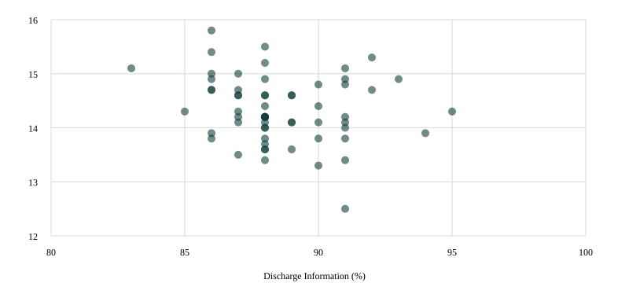

Wisconsin · Matched-Year Observational Research · July 2022–June 2023
After The
Discharge
- The Question Do hospitals with higher patient-reported discharge-information scores have lower hospital-wide readmission rates?
- The Foundation A discharge-planning trial and patient-experience studies motivated a comparison of two official CMS measures covering the same year.
- The Finding Among 61 Wisconsin hospitals, the primary association was weak and uncertain. A stricter survey threshold produced a stronger association, showing that the result depends on which hospitals are included.
By Parsa Ara · Historical analysis rerun October 29, 2026
The Evidence
A Weak And Uncertain Association
A five-percentage-point higher discharge-information score was associated with a 0.26-percentage-point lower readmission rate. The 95% bootstrap interval ranged from 0.64 points lower to 0.09 points higher, leaving the direction uncertain.

Each dot represents one hospital; overlapping dots are possible. Axes are restricted to the observed neighborhood for readability. These are hospital estimates, not linked patient outcomes.
| Survey Minimum | Hospitals | Correlation | Rate Difference Per 5-Point Score Increase | 95% Interval |
|---|---|---|---|---|
| 100 Completed | 61 | −0.19 | −0.26 Points | −0.64 To +0.09 |
| 300 Completed | 51 | −0.30 | −0.41 Points | −0.86 To −0.06 |
The stricter subset excludes ten hospitals. Its stronger association does not replace the primary result. Rank correlations were −0.19 and −0.32, respectively. Neither analysis establishes that improving discharge information causes fewer readmissions.
Research Design
One State, One Measurement Year
We joined CMS hospital records by six-character facility ID. Discharge Information (H_COMP_6_Y_P) came from the April 2024 archive; hospital-wide risk-standardized readmissions (READM_30_HOSP_WIDE) came from October 2024. Both cover July 1, 2022–June 30, 2023, before the 2025 HCAHPS changes.
The discharge composite covers reported discussion of help at home and written information about symptoms. It measures reported receipt of information, not comprehension. Readmissions are a separate Medicare hospital-level outcome; the surveyed patients and readmitted patients are not linked.
| Requirement | Hospitals |
|---|---|
| Listed Wisconsin Facilities | 142 |
| Acute Care Hospitals | 65 |
| Both Numeric Measures, Matching Year | 65 |
| 100+ Surveys And Unflagged Measures | 61 |
Four hospitals were excluded: two had survey data-collection discrepancy flags, one had both a discrepancy flag and fewer than 100 surveys, and one had fewer than 100 surveys. Critical access and other hospital types were excluded. The 61 eligible hospitals exceeded the prespecified 60-hospital threshold, so no state expansion was used.
Each hospital received equal weight. We estimated Pearson correlation and a linear slope, resampling hospitals 10,000 times for percentile bootstrap intervals (seed 20261029). We checked rank correlation and the 300-survey subset. The historical amendment was committed before inspecting Wisconsin paired values.
What The Comparison Can Establish
This is a descriptive association. Patient needs, hospital resources, nonresponse and access to care after discharge may explain part of it. Survey answers may follow a readmission. CMS risk adjustment does not remove all differences between hospitals. Bootstrap intervals describe variation across these hospital estimates; they do not propagate each CMS estimate’s measurement uncertainty. The result describes 2022–2023 and is not a current hospital ranking.
Foundations And Reproducibility
Evidence Behind The Question
- Jack Et Al. · RED Randomized Trial
A coordinated discharge package reduced combined emergency visits and rehospitalizations. It did not isolate written instructions; the readmissions-only interval included no effect. Full text reviewed.
- Siddiqui Et Al. · Survey Timing
Survey responses after readmission raise reverse-causation concerns. Abstract reviewed.
- Hydoub Et Al. · Multisite Patient Experience Study
Discharge Information showed no association in the reported model; its outcome clock began at survey receipt. Full text reviewed.
Official CMS Archives · Full Results And Hospital Data · Source Hashes · Protocol, Code And Audit History
The earlier current-release feasibility audit remains in the repository. This page reports the completed historical comparison. The evidence review is targeted, not systematic. No patient records were collected.